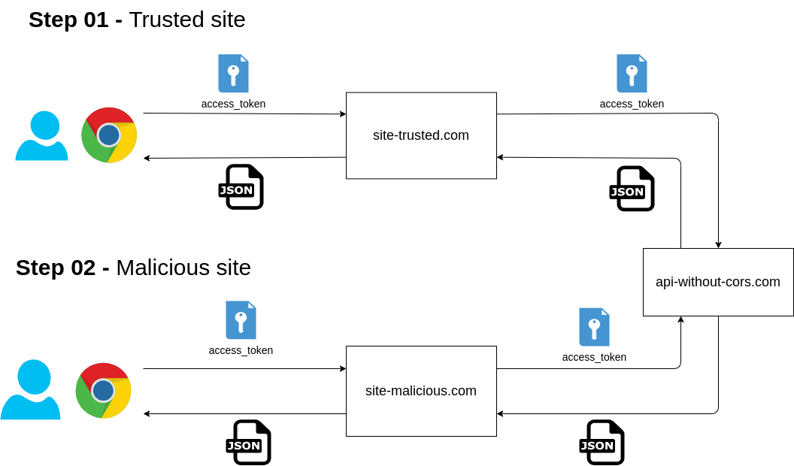
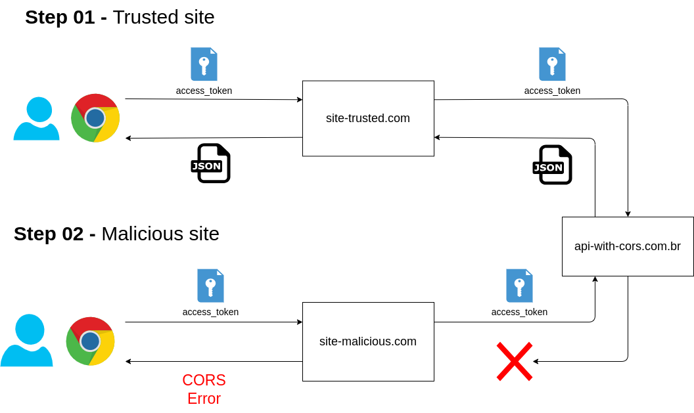
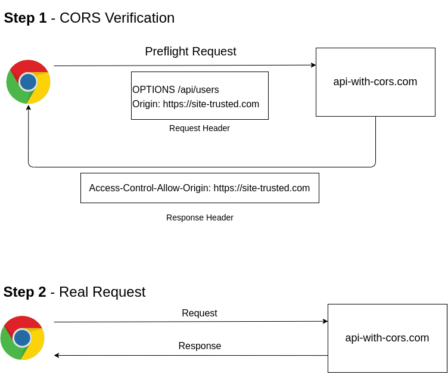

CORS (Cross-Origin Resource Sharing)
- CORS (Cross-Origin Resource Sharing) is browser security mechanism that prevent that a web page call a resource from an API from another origin.
- The CORS mechanism protects the user from malicious sites that try to access resources from another origin.
APIs without CORS verification (Threat)

- Without CORS verification a malicious site can use the credentials storage in broser to perform requests to the API.
APIs with CORS verification enabled (Safe)

- With CORS verification enabled the browser will prevent the malicious site read responses from the API.
How CORS works?
- The CORS mechanism works in two steps:
- The broser send a preflight request to ask to API if the site origin is accepted. The api answer with a Access-Control-Allow-Origin header with the origin allowed.
- If the origin is allowed the browser send the real request.

- If a malicious site try to perform a preflight request to the API, the value of Access-Control-Allow-Origin header will be different from the malicious origin and the browser wont read the response from real request and will throw a CORS error.
Code
- Below is an example of a simple API that implements CORS verification.
page.html
<!DOCTYPE html>
<html lang="en">
<body>
<h1>HTTP Request Demo</h1>
<button onclick="makeRequest()">Make Request</button>
<div id="result"></div>
<script>
function makeRequest() {
fetch('http://localhost:5000/', {method: "PATCH", headers: {'Test': 'Example'}})
.then(response => response.json())
.then(data => {
document.getElementById('result').innerHTML = JSON.stringify(data, null);
})
.catch(error => {
document.getElementById('result').innerHTML = 'Error: ' + error.message;
});
}
</script>
</body>
</html>
api.py
from flask import Flask, jsonify
app = Flask(__name__)
@app.after_request
def add_global_headers(response):
response.headers['Access-Control-Allow-Origin'] = 'http://localhost:8000'
response.headers['Access-Control-Allow-Headers'] = 'Content-Type,Authorization,Test'
response.headers['Access-Control-Allow-Methods'] = 'PATCH,OPTIONS'
return response
@app.route('/', methods=['GET'])
def get_data():
return jsonify({"get": "success"})
@app.route('/', methods=['POST'])
def post_data():
return jsonify({"post": "success"})
@app.route('/', methods=['PATCH'])
def patch_data():
return jsonify({"patch": "success"})
if __name__ == '__main__':
app.run(debug=True, port=5000)